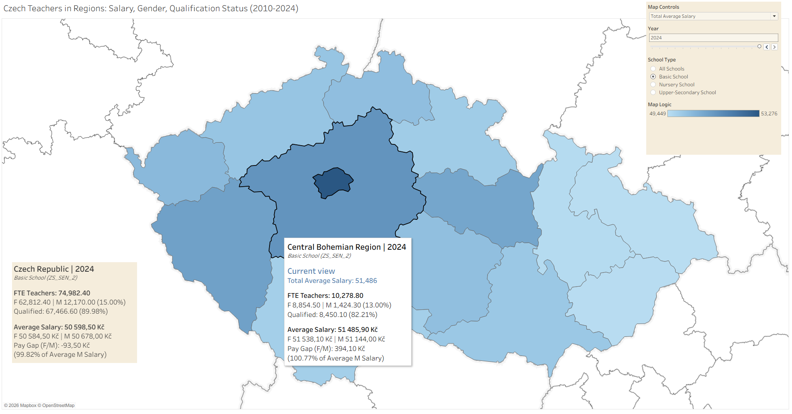

Executive Summary
This project investigates the evolution of the teaching profession in the Czech Republic through three core lenses: regional disparities, gender demographics (including the pay gap), and professional qualification levels. Spanning 2010 to 2024, the study seeks to determine how these variables fluctuate across regions and school types over time.
The study was built by synthesizing fragmented data from the Ministry of Education (MŠMT) and the Czech Statistical Office (ČSÚ). Because official platforms often limit large-scale longitudinal exports, I developed custom JSON sitemaps to automate data extraction via web scraping. The resulting datasets were cleaned and unified using Power Query (M Language) to resolve significant methodological shifts occurring in 2011 and 2016. The final output is an interactive Tableau analytics suite designed with Color Universal Design (CUD) principles to ensure the findings remain accessible and statistically transparent.

Project Origins
This project stemmed from my interest in the Czech education system from the teachers' perspective. I aimed to investigate disparities such as teacher gender ratios, regional variations, differences in remuneration (Pay Gap), the age structure of the teaching population, and teaching workloads—all tracked longitudinally. The project was conceived as an exploratory analysis to determine the effectiveness of various visualisation methods and the actual informative value of the methodologies and data used. My goal was to provide users with the autonomy to explore these phenomena through an objective, data-driven lens.
Exploration
The exploration phase involved a detailed review of online resources and various educational data sources. I found that the Czech Statistical Office (ČSÚ) regularly publishes yearbooks and reports which, while useful and visually engaging, primarily focus on schools as institutions rather than on teachers themselves. Furthermore, these data are often limited to short timeframes. Similarly, the Ministry of Education, Youth and Sports (MŠMT) published regional yearbooks until 2010 containing valuable data—such as student-to-teacher ratios or population age structures—but this series was discontinued.
The most suitable sources proved to be the periodic data published on the MŠMT website concerning gender issues (Ministry of Education, Youth and Sports, n.d.), which combine regional contract counts (FTE), gender distribution, and average salaries. These data are categorised by region and school type. To complement this, I integrated data from the ČSÚ interactive application (Czech Statistical Office, n.d.), which offers regional contract counts broken down by school type, gender, and professional qualification.
MŠMT (data)
For this project, I relied on two primary pillars. The first consists of MŠMT data regarding gender demographics of employees from 2010 to the first half of 2025. This dataset includes gender ratios, average salaries (total and by gender), and pay gaps. The main challenge lay in the variability of the data and table structures across files (.xls, .xlsx), evolving methodologies, and inconsistent regional/NUTS nomenclature. Initially, I attempted to write an automated script for processing using Power Query (M Language) with AI assistance; however, this proved inefficient due to the table inconsistencies. I ultimately opted for manual data processing through meticulous copying and validation to ensure accuracy, mitigating the risk of human error through cross-checks. Data for the first half of 2025 were excluded to avoid skewing the 2024 annual statistics when combined with the secondary dataset.
The resulting dataset provides information on teachers and management staff across regions, including the percentage of men, average total salary, and the salary breakdown and gap for men and women. For further investigation, I selected four school categories: Nursery (MŠ), Basic (ZŠ), Upper-Secondary (SŠ), and "All Schools" for a comprehensive overview.
Table 1: Key Variables in MŠMT Datasets
| Variable | Description |
|---|---|
| year | Status as of the end of the calendar year. |
| School_cluster_code | School distribution according to reported clusters. |
| School_type | Type of school assigned. |
| cznuts_cz | Name of the administrative unit (NUTS-3 level). |
| NUTS | International territorial unit code for statistical purposes. |
| men_percent | Percentage of men out of the total FTE contracts. |
| salary_total, men, women | Gross monthly teacher salary (total, female, male). |
| salary_proportion_m_w | Relative salary of women compared to men (%). |
| paygap_w_m | Absolute regional difference in remuneration (Pay Gap) in CZK. |
ČSÚ (data)
The second pillar involves ČSÚ data on teachers in regional education converted to Full-Time Equivalents (FTE) for the period 2006–2025. Since the ČSÚ interactive application does not facilitate the simultaneous viewing of all regions and years, I utilised web scraping via the Webscraper.io plugin. Given the complex site structure, I created a JSON sitemap with AI assistance. As the website modifies the URL to update data views, I extracted internal codes for regions and years and generated all scraping link combinations in Excel. Data integrity was subsequently verified through random spot-checks of the scraper results against the original ČSÚ web application.
Table 2: Key Variables in ČSÚ Datasets
| Variable | Description |
|---|---|
| year | Observed calendar year (2010–2024). |
| NUTS | Common code used to join with MŠMT data. |
| total_teachers (& men, women) | Total number of teachers in Full-Time Equivalents (FTE). |
| qualified, unqualified | Number of FTE contracts meeting or failing professional teaching qualifications. |
Both final datasets were joined in Excel using Power Query via an inner join, resulting in a final longitudinal dataset spanning 2010–2024.
Analysis of Categories and Variables (dataset)
In pre-primary education, nursery (MŠ) teachers were recorded separately until 2016; since then, they have been grouped with preparatory class teachers. Within MŠMT data, these figures are regionally aggregated (by salary and gender), whereas in ČSÚ FTE data, they are not. Basic schools (ZŠ) in ČSÚ FTE data integrate both standard teachers and those involved in educating students with Special Educational Needs (SEN/SVP); however, for salary and gender data until 2016, these were recorded separately. Since 2016, they have been merged.
Upper-secondary education (SŠ) is also an inconsistent category; until 2016, it included all secondary schools, Higher Professional Schools (VOŠ), and conservatoires. Since 2016, it only includes SŠ and conservatoires.
Table 3: School Cluster Variable Description
| Variable Value | Cluster Description |
|---|---|
| ALL | The entire regional education system in Czechia |
| MS | Nursery (MŠ) teachers only |
| PV_MS_PT | Nursery (MŠ) and Preparatory class teachers |
| SS_K | Secondary (SŠ) and Conservatoire teachers (from 2016) |
| SS_VOS_K | Secondary (SŠ), VOŠ, and Conservatoire teachers (until 2016) |
| ZS_SEN_1 | Basic (ZŠ) and SEN teachers (until 2016) |
| ZS_SEN_2 | Basic (ZŠ) and SEN teachers (from 2016) |
Management staff significant methodological change in 2011 (transitioning from "Principals/Deputies" to a broader "Management Staff" category) prevented continuous longitudinal comparison, leading to the exclusion of this category from the final analysis.
I selected Tableau Public for the development of this interactive dashboard to expand my visualisation portfolio and leverage the robust analytical tools offered by the platform. For the visual representation of regional data, I chose the choropleth map as the central element. This provides the user with an immediate spatial context and allows for effective mapping of regional differences through colour gradation.
The choice of a choropleth map offers several advantages, primarily high cognitive efficiency for specific tasks. The human brain interprets spatial patterns and colour intensity much faster than rows of numbers, especially when performing rough regional comparisons (e.g., Nusrat et al., 2016).
Visualisation Dashboard
The visualisation consists of a dashboard dominated by a choropleth map of the Czech Republic. The colour scheme represents the intensity of the observed phenomenon in each region. In the top-right corner, a control panel with filters and parameters allows users to manipulate the map content. In the bottom-left corner, an information card provides National Data for benchmarking. By hovering over specific regions, users can access detailed regional statistics (Table 4).
Table 4: Visualisation Elements
| Element | Form | Function |
|---|---|---|
| Map Controls | Parameter | Metric selection: Salaries, Pay Gap, Qualifications, Gender ratio. |
| Year | Filter | Slider for longitudinal analysis (2010–2024). |
| School Type | Filter | Selection: All Schools, Basic, Nursery, Upper-Secondary. |
| Map Logic | Legend | Colour scale explaining the values corresponding to map shades. |
| Czech Republic | Card | National Data; displays aggregated Czech Republic data. |
Accessibility and Inclusive Design
I evaluated and optimised the accessibility of the visual artifact to ensure clarity for a wide spectrum of users, including those with visual impairments. Specific steps included implementing the sans-serif font Tableau Book at a minimum size of 12pt for high legibility and applying Colour Universal Design (CUD) principles as recommended by Okabe and Ito (2008). This involved increasing contrast, removing extraneous colours, highlighting boundary lines, and adopting a blue colour palette visible to users with various types of colour vision deficiency. I validated these choices using the Vischeck (n.d.) simulator, which confirmed that the selected palette and contrast successfully convey the primary information.
The datasets used are primarily suitable for obtaining a high-level overview of the education system, as dynamic changes in reporting methodology affect almost all observed variables. Furthermore, the resulting picture is incomplete; it focuses exclusively on teachers receiving a state salary, thereby omitting the private sector. Additionally, the conversion to Full-Time Equivalents (FTE) provides a different type of information than headcounts; for users interested in the actual number of individuals and who misinterpret the statistics, this can lead to a false impression of the size of the teaching force.
Another limitation is the lack of regional granularity for certain key indicators. While average salary includes all components from base pay to bonuses, more detailed breakdowns by education level, salary grade, or specific age groups are not publicly available at the regional level.
In evaluating the visualisation, one must consider several critical limitations and risks of cognitive bias, as discussed by Valdez et al. (2017). The first major risk is the Ecological Fallacy. In this flawed inference, we project relationships observed at an aggregate level onto individuals, even though the relationship may not hold true for them. Another significant factor is the Anchoring Effect, a bias where a previous stimulus serves as a "mental anchor" for subsequent estimates or decisions.
Visual interpretation of a choropleth map is also influenced by Area Bias. Users tend to attribute greater importance to larger geographic areas, potentially overestimating the significance of differences in large regions compared to small ones, even though the data is encoded only by colour.
The current project serves as a functional foundation with significant potential for expansion. A logical next step would be the inclusion of previously excluded groups, particularly school management and specific types of institutions (e.g., language schools or conservatoires). Incorporating additional demographic variables, such as age distribution or salary grades, would also be highly beneficial in highlighting systemic issues like the aging of the teaching force (Ministry of Education, Youth and Sports, 2025).
This project has highlighted the vast potential for data analysis of the teaching profession within regional education, while simultaneously exposing the limits of public data reporting and joinability. Although I successfully created a 14-year longitudinal overview, methodological shifts and the inaccessibility of granular data limit the depth of analysis. Data deserve more user-friendly presentation and simplified open interfaces.